Filo dos Cordados
Filo com animais mais complexos: inclui a espécie humana.
Características Gerais
- Celomados; Triblásticos; Deuterostômios;
Apresentam metameria (mais evidente na fase embrionária).
Características exclusivas
- Tubo nervoso dorsal (TND);
- A região anterior do TND se dilata e forma o encéfalo;
- A região posterior do TND se alonga e forma a medula espinhal;
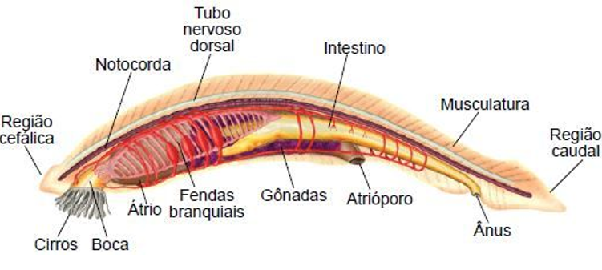
Notocorda
Bastão cilíndrico e maciço, constituído por células e substância gelatinosa. Por ser rígida, a notocorda sustenta o corpo do embrião.
A notocorda persiste a vida toda ou desaparece completamente, e em outros, a notocorda é substituída por uma estrutura cartlaginosa ou óssea: o crânio e a coluna vertebral (tal substituição ocorre durante a embriogênese).
Fendas Faríngeas
Situadas bilateralmente na faringe. Nos cordados que respiram por brânquias, as fendas permanecem no adulto. Nos demais, as fendas desaparecem ainda na embriogênese.
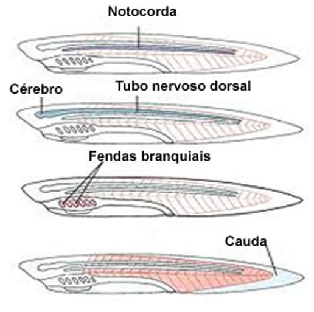
Vertebrados
Sub-Filo Vertebrata (ou craniata)
- Possuem 7 classes:
- Ciclóstomas;
- Condrictes;
- Osteíctes;
- Anfíbios;
- Répteis;
- Aves;
- Mamíferos.
Ciclóstomas
- Aquáticos sem mandíbulas (ou maxilas);
- Boca circular;
- Corpo alongado;
- Alguns são ectoparasitas.
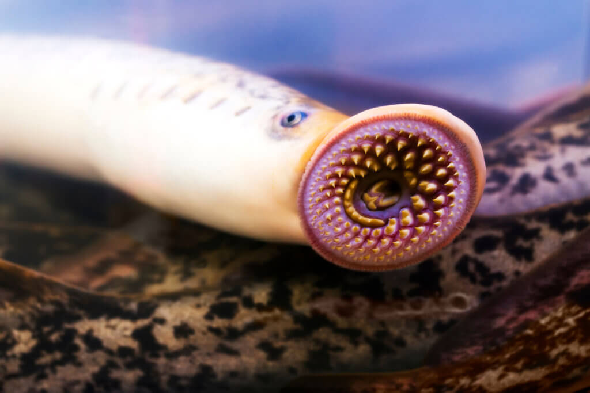
Condrictes
- Peixes com esqueleto cartilaginoso;
- Geralmente marinhos;
- Escamas placóides;
- Respiração exclusivamente branquial;
- Boca ventral;
- Geralmente 5 pares de fendas branquiais;
- Coração bicavitário;
- Heterotérmicos;
- Não possuem bexiga natatória;
- Possuem linha lateral;
- Possuem cloaca;
- Dioicos;
- Ovovivíparos.
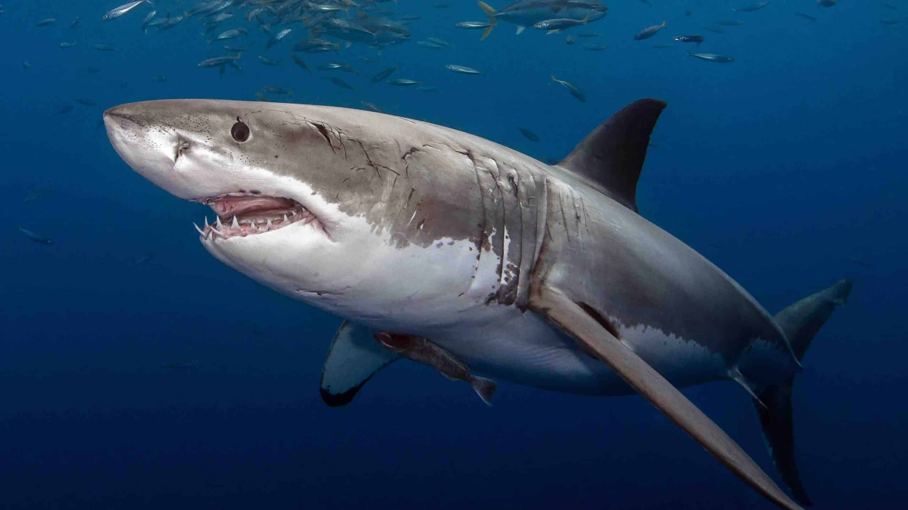
Osteíctes
- Esqueleto predominam=ntemente ósseo;
- Podem ser de água doce ou salgada. Algumas espécies vivem por longos períodos no ambiente terrestre;
- Pele rica em glândulas;
- Escamas cicloides;
- Respitação branquial com opérculo protegendo as brânquias;
- Boca anterior;
- 1 par de fendas branquiais;
- Coração bicavitário;
- Abertura urogenital e ânus;
- Bexiga natatória;
- Heterotérmicos;
- Linha lateral;
- Dioicos e ovulíparos.
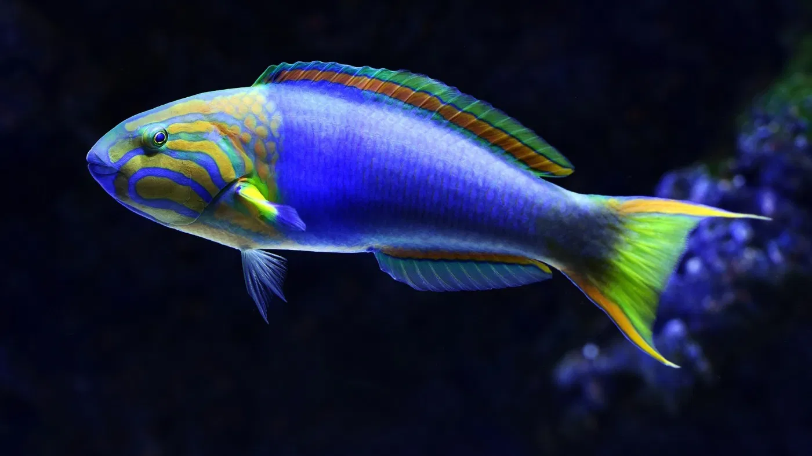
Anfíbios
- Os ovos geralmente postos na água originam girinos, fase larval aquática que passa por metamorfose, gerando um adulto terrestre;
- O adulto vive próximo a ambientes aquáticos;
- Vivem em água doce e na terra;
- Pele com glândulas mucosas;
- Respiração branquial nas larvas, pulmonar e cutânea nos adultos;
- Coração tricavitário;
- Heterotérmicos;
- Possuem cloaca;
- Dioicos;
- Ovulíparos.
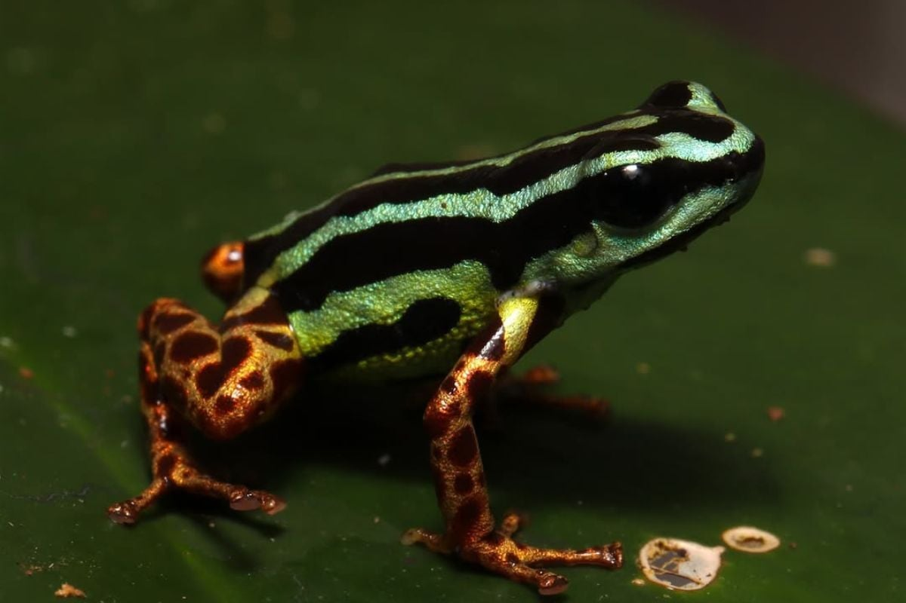
Répteis
- Aquáticos (água doce e salgada) e terrestres;
- Pele grossa rica em queratina (evita a perda de água);
- Respiração exclusivamente pulmonar;
- Maioria tem coração tricavitário;
- Heterotérmicos/ Pecilotérmicos;
- Ovos com cloaca (aminiota);
- Dioicos;
- Ovíparos e ovovivíparos;
- Possuem órgãos dos sentidos que lhes permitem, por exemplo, sentir o gosto e o cheiro das coisas;
- Os olhos possuem pálpebras e membrana nictitante, que auxiliam na proteção dessas estruturas.
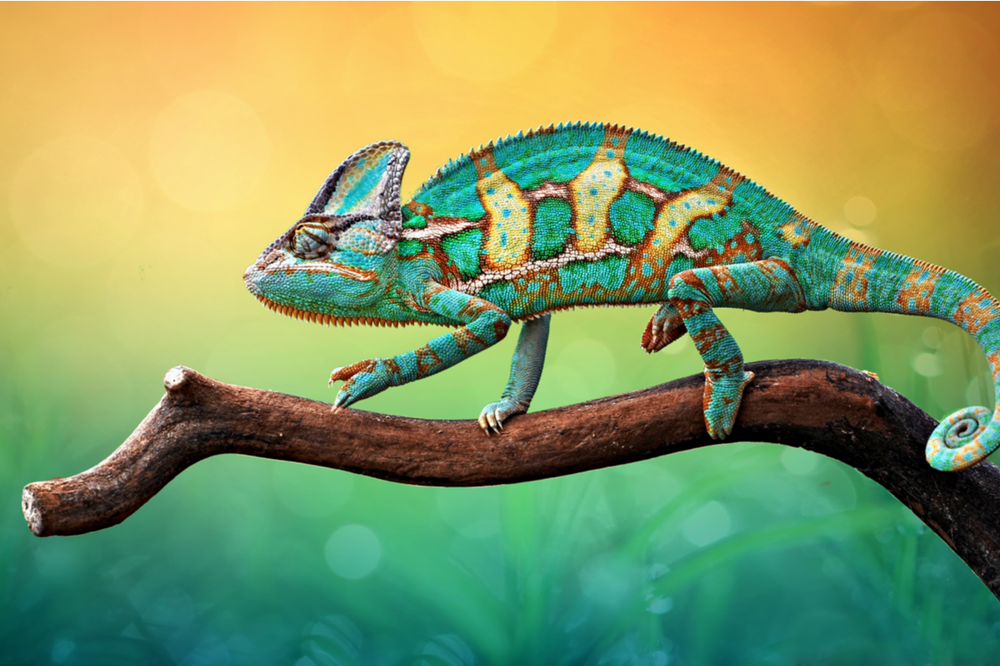
Aves
- Possuem pele fina, sem glândulas e coberta por penas;
- Glândula uropigeana na base da cauda (impermeabiliza e lubrifica as penas);
- Anexos: bico, unha e escamas nas patas - no bico pontiagudo, de revestimento córneo, há um par de narinas;
- Respiração exclusivamente pulmonar;
- Siringe é responsável pela produção de som;
- Homeotérmicos;
- Coração tetracavitário;
- Possuem cloaca;
- Dioicos;
- Ovíparos;
- Grupos: não voadoras (ratitas) e voadoreas.
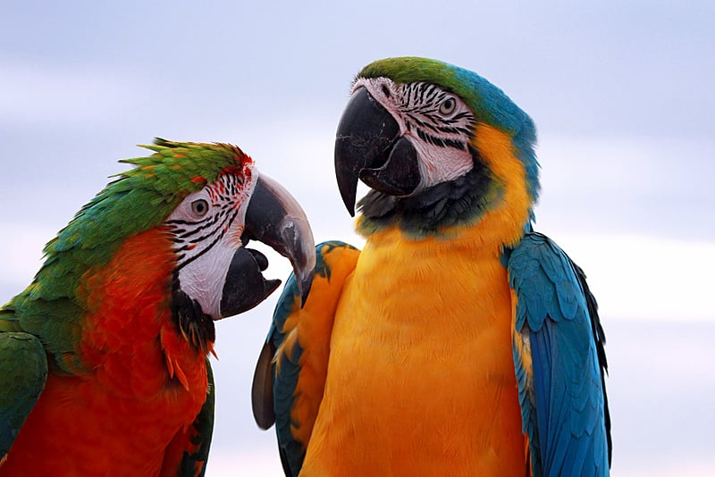
Adaptações para o vôo:
- Presença de sacos aéreos ligados aos pulmões e aos ossos pneumáticos;
- Penas;
- Corpo aerodinâmico;
- Membros anteriores modificados em asas;
- Osso esterno em fotrma de quilha para maior inserção dos músculos peitorais;
- Ossos pneumáticos (ocos);
- Ausência de bexiga urinária;
- Eliminam ácido úrico nas excretas.
Mamíferos
- Vivem em ambientes aquáticos e terrestres;
- Pele com pelos e glândulas (sebáceas e sudoríparas);
- Possuem glândulas mamárias;
- Anexos: garra, unha, casco, espinhos, cornos e chifres;
- Respiração exclusivamente pulmonar;
- Homeotérmicos/ endotérmicos;
- Coração tetracavitário;
- Dioicos;
- Vivíparos e ovíparos.
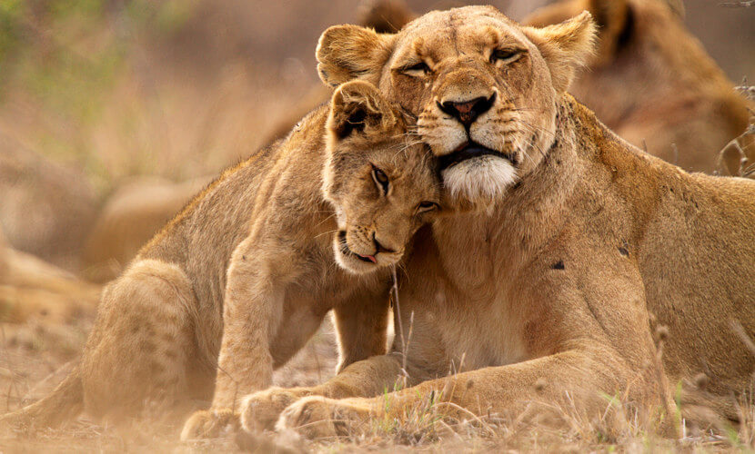
- Eficiente controle da temperatura corporal, facilitado pelo revestimento isolante do corpo, composto por pelos e por uma camada de gordura situada no tecido subcutâneo (a camada inferior da pele).
- Separação completa de sangue venoso e arterial no coração, que permite melhor controle da pressão arterial e uma circulação mais eficiente.
- Encéfalo proporcionalmente maior que o de outros grupos de animais.
Diferença entre Cornos e Chifres
Cornos
- Projeção óssea do osso frontal do crânio envolta por uma camada de queratina, que cresce além da projeção óssea;
- Não há sensibilidade d=a dor;
- Crescimento contínuo;
- Não são bifurcados;
- Não são trocados durante a vida;
- Ex.: veados, antílopes, bovídeos e girafas.
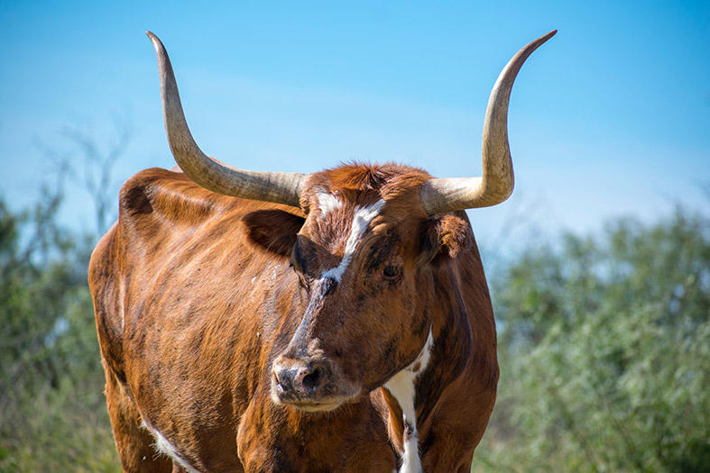
Chifres
- Estruturas ósseas sólidas;
- Ramificadas;
- Cobertas por uma camada de pele muito vascularizada - veludo;
- Trocados anualmente. O fluxo sanguíneo no veludo é cortado, a pele morre e o osso é revelado e reabsorvido, promovendo a queda;
- Ex.: cervídeos, renas e caribus (a maioria presente nos machos).
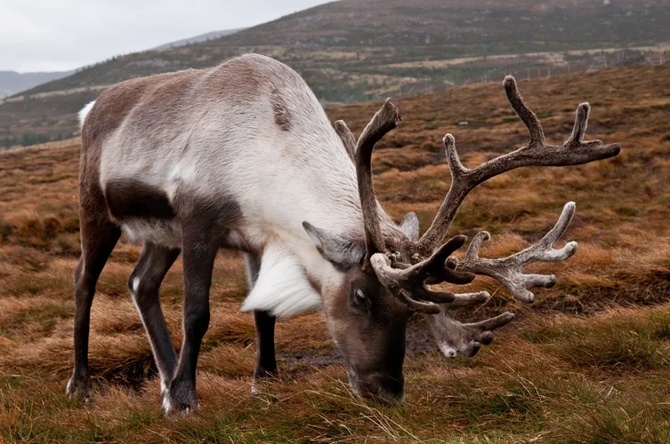